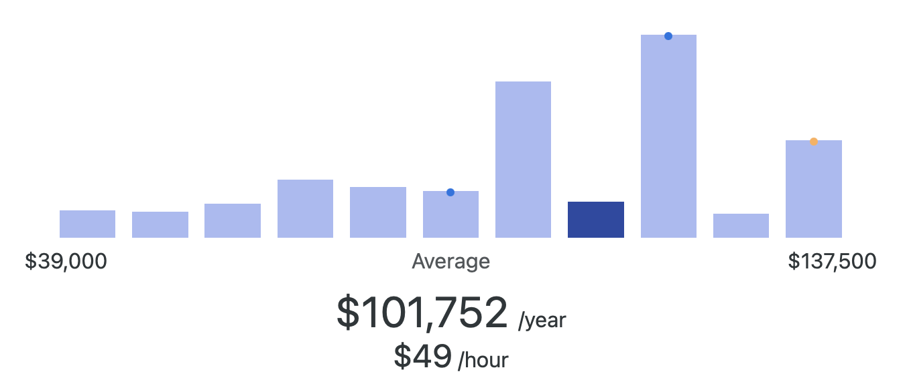

AI Engineer Career Opportunities
Average Salary
$101,752 per year.

What Do AI Engineers Do?
AI engineers build and deploy artificial intelligence systems that enable machines to learn, reason, and make decisions. They design algorithms, train machine learning models, and integrate AI solutions into applications such as chatbots, recommendation systems, computer vision, and natural language processing. AI engineers often collaborate with data scientists, software developers, and product teams to create intelligent tools that improve efficiency and user experiences. This career requires strong knowledge in programming, statistics, and deep learning frameworks.
Companies Offering Opportunities
Here are some companies that regularly hire or provide internships for AI engineering roles:
- Paycom (Oklahoma City – exploring AI in HR and payroll systems)
- Devon Energy (Oklahoma City – AI-driven data and operations insights)
- Boeing (Oklahoma and national – AI applications in aerospace and defense)
- Love’s Travel Stops & Country Stores (Oklahoma City – AI for logistics and customer experience)
- Microsoft (national – AI research, Azure AI services)
- Google DeepMind (national/international – cutting-edge AI research)
- IBM (national – AI engineering with Watson and enterprise solutions)